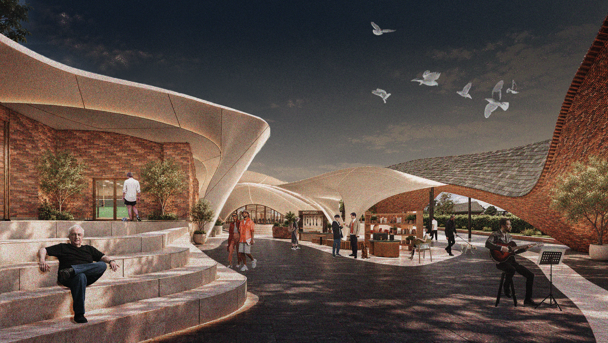
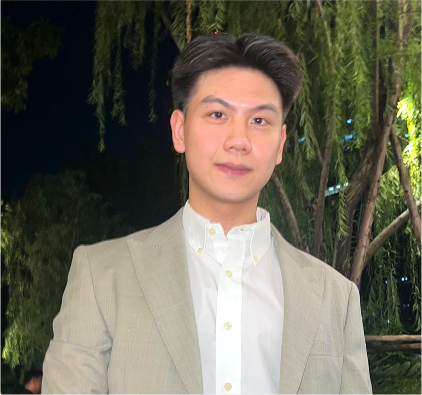

NATTHANAN SURACHARTKUMTHORNKUL / PORTFOLIO
Architecture for
public life.
From the first spatial idea
to the details that make it work.

PORTFOLIO
Places to gather.
Spaces to belong.
Public landscapes, collective housing
and buildings shaped by their setting.
The Urban Playground
DesignHeidelberg West, MelbournePublic landscape + recreation
AI-assisted presentation image
 View project
View projectNile Zero
DesignRhoda Island, CairoCollective housing
Original project image
 View project
View projectCamberwell Housing
DesignCamberwell, MelbourneApartments + ground-floor retail
Original project image
 View project
View projectLoch Ard Gorge, Great Ocean RoadVisitor centre + coastal walkway
AI-assisted presentation image
BEYOND THE IMAGE
Ideas need
good drawings.
Design thinking, technical care
and an understanding of the site.
My professional work brings together station planning, architectural documentation and Revit coordination. Recent construction experience adds a practical view of how drawings meet the work on site.
PP18 / SI YAN STATION
Original project drawings · DPA project team
THE PERSON BEHIND THE WORK

Natthanan SurachartkumthornkulCurious about place.
Grounded in making.
I'm Natthanan, an architectural designer working across design, documentation and coordination.
I completed my Master of Architecture at RMIT in 2026. My experience spans architectural practice in Thailand and hands-on construction work in Australia, connecting spatial ideas with the practical questions of delivery.
EDUCATIONMaster of ArchitectureRMIT University / 2026
PRACTICEDesign + documentationRevit / AutoCAD / coordination